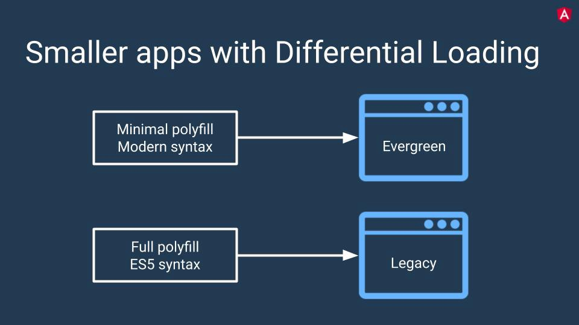
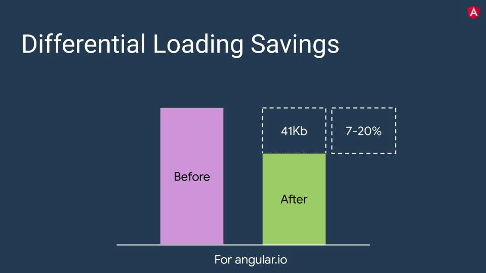

在今天早些时候Angular团队发布了8.0.0稳定版。其实早在NgConf 2019大会上，演讲者就已经提及了从工具到差分加载的许多内容以及更多令人敬畏的功能。下面是我对8.0.0一些新功能的简单介绍，希望可以帮助大家快速了解新版本。
根据您的browserlist 文件，在构建期间，Angular将为其创建单独的包polyfills。所以基本上你会有：

使用此功能将减小捆绑包大小。

但这是如何工作的？
基本上，Angular将使用polyfill构建其他文件，并且它们将注入nomodule 属性。
<body>
<pp-root> </ pp-root>
<script type =“text / javascript”src =“runtime.js”> </ script>
<script type =“text / javascript”src =“es2015- polyfills.js ” nomodule > </ script>
<script type =“ text / javascript“src =”polyfills.js“> </ script>
<script type =”text / javascript“src =”styles.js“> </ script>
<script type =”text / javascript“src =”vendor .js“> </ script>
<script type =”text / javascript“src =”main.js“> </ script>
</ body>nomodule属性是一个布尔属性，用于阻止脚本在支持模块脚本的用户代理中执行。这允许在现代用户代理和旧用户代理中的经典脚本中选择性地执行模块脚本.
您现在可以将SVG文件用作模板。到目前为止，我们只能选择使用内联HTML或外部HTML作为模板。
@Component({
selector: "app-icon",
templateUrl: "./icon.component.svg",
styleUrls: ["./icon.component.css"]
})
export class AppComponent {...}虽然早在angular 6的时候就提出了Ivy，但是Ivy仍处于试验阶段，通过Angular 8版本，您可以通过创建一个enable-ivy标志设置为true 的应用程序来测试它，如下所示。它不是完全正常运行（选择预览），正如Igor Minar在ngConf 2019中建议的那样，视图引擎仍然推荐用于新应用。
To enable Ivy in an existing project set enableIvyoption in the angularCompilerOptions in your project’s tsconfig.app.json
要在现有项目中使用Ivy的话，需要在tsconfig.app.json文件中设置angularCompilerOptions选项的enableIvy属性
“angularCompilerOptions”： {“enableIvy”：true}您也可以使用新引擎创建新应用程序
ng new my-app --enable-ivyIvy将提供以下优势，Angular 9中预计前3个功能：
Bazel是谷歌开源的另一款工具，“我们不喜欢谷歌”。正如Igor Minar所解释的那样，Bazel已经在内部使用了很长时间，现在可供所有人使用。您可以参考Bazel文档，并了解如何将其与Angular一起使用。
你可能想知道：“Bazel准备好了吗？”简答：还没有。目前，它处于“选择预览”模式。
Bazel可作为选择加入，预计将包含@angular/cli在第9版中。
Bazel将提供以下优势：
您可以使用以下命令添加Bazel支持：
ng add @ angular / bazel或者，您也可以使用Bazel创建一个新的应用程序：
npm install -g @ angular / bazel
ng new my-app --colection = @ angular / bazel新版本允许我们使用Builders API，也称为Architect API。
angular使用builders进行主要操作：serve ，build ，test ，lint和e2e 。您可以在angular.json文件中查看使用过的构建器。
...
"projects": {
"app-name": {
...
"architect": {
"build": {
"builder": "@angular-devkit/build-angular:browser",
...
},
"serve": {
"builder": "@angular-devkit/build-angular:dev-server",
...
},
"test": {
"builder": "@angular-devkit/build-angular:karma",
...
},
"lint": {
"builder": "@angular-devkit/build-angular:tslint",
...
},
"e2e": {
"builder": "@angular-devkit/build-angular:protractor",
...
}
}
}
}从现在开始，我们可以创建自定义构建器。我认为这是gulp/grunt“旧时代”中的命令。
基本上，构建器只是一个带有一组命令的函数，您可以createBuilder()从@angular-devkit/architect包传递给方法。
import { createBuilder } from '@angular-devkit/architect';
function customBuild(options, context) {
return new Promise((resolve, reject) => {
// set of commands
})
}
createBuilder(customBuild);您可以在此处查看内置的Angular构建器。
新版本不推荐使用loadChildren:string 懒惰加载模块的语法。
在8.0.0之前，懒加载的使用方法如下：
loadChildren: './lazy/lazy.module#LazyModule';现在的使用方法如下：
loadChildren: () => import('./lazy/lazy.module').then(m => m.LazyModule)如果你有很多的懒加载的模块，并希望通过软件包做到这一点，可以点击此处参考
Angular团队希望为使用AngularJS的所有开发人员提供支持，并帮助他们升级到Angular。该团队现在在升级时添加了对$ location服务的支持。添加了angular/common/upgrade这个新包。
Angular 8中添加了Web worker支持。现在，您可以添加Web worker并将要在后台运行的耗时进程委派给Web worker。运行以下命令以使用Angular CLI生成新的Web worker：
ng g webWorker <name>随着PWA的使用日益增长，对Service Worker进行了许多改进。
validateFormAndDisplayErrors(form: FormGroup) {
Object.keys(form.controls).map((controlName) => {
form.get(controlName).markAsTouched({onlySelf: true});
});
}以前要删除所有元素，formArray 我们必须循环删除第一个元素直到空：
while（formArray.length）{
formArray.removeAt（0）;
}现在就不需要那样操作了，直接使用clear方法就可以完成：
formArray.clear()Angular现在使用TypeScript 3.3（v7使用3.2.x）。没有太多突破性的变化 - 所以你可能应该做得很好。你可以在这里查看。
为每个请求ServerRendererFactory2创建一个新的实例DomElementSchemaRegistry，这是非常昂贵的。现在它将共享全局实例DomElementSchemaRegistry.
从@angular/platform-browser中移除了DOCUMENT。如果您使用DOCUMENT from @angular/platform-browser，则应从此处开始导入@angular/common。
@angular/http在Angular 5中不推荐使用package，但由于@angular/platform-server依赖于它，所以仍然可用。从现在它已从包列表中删除。
使用此功能时，必须提供静态标志以定义何时需要解析ViewChild和ContentChild实例。
使用此功能时，必须提供静态标志以定义何时需要解析ViewChild和ContentChild实例。
// Ensure Change Detection runs before accessing the instance
@ContentChild('foo', { static: false }) foo!: ElementRef;
// If you need to access it in ngOnInt hook
@ViewChild(TemplateRef, { static: true }) foo!: TemplateRef;以上功能不适用于ViewChildren或ContentChildren。它们将在变更检测运行后解析。
需要注意的是，设置static: true将不允许您从动态模板分辨率（例如*ngIf）获得结果。
添加了原理图支持以将现有代码迁移到此语法，因为将使用此语法Ivy 。您可以运行ng update @angular/core以迁移现有代码。
Angular Material工程重命名为Angular Components。包还是跟以前保持一样的。
以上就是angular 8版本的一些改动。总体来说变化不是很大，延续了angular每年一个稳定版的习惯。
原文链接